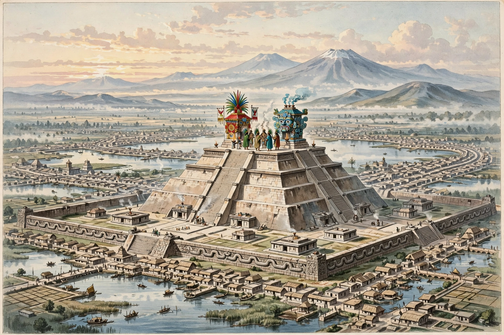

Human sacrifice in Aztec culture
| Human sacrifice in Aztec culture | |
|---|---|
| Practised by | The Mexica (Aztecs) and neighbouring Nahua peoples |
| Period | c. 14th century – 1521 (Spanish conquest) |
| Principal site | Templo Mayor, Tenochtitlan |
| Victims | War captives, slaves, children, god-impersonators (ixiptla) |

Human sacrifice was a central rite of Aztec religion, practised on a scale unmatched elsewhere in pre-Columbian Mesoamerica. The Mexica (Aztecs) believed that the universe ran on a reciprocal economy of nourishment: the gods had sacrificed themselves to set the Fifth Sun in motion, and human blood and hearts — chalchiuatl, "precious water" — were owed in return to keep the sun rising and postpone the world's destruction. Sacrifice was embedded in the eighteen monthly festivals of the Aztec calendar and performed at temples throughout the empire, above all at the Templo Mayor of Tenochtitlan.
Methods and occasions
The most characteristic rite involved stretching a victim over a sacrificial stone, opening the chest with an obsidian or flint blade, and raising the still-beating heart to the sun; the body was then rolled down the temple steps. Other deities demanded other deaths: victims of Tlaloc, many of them children, were drowned or killed so that their tears would bring rain; a chosen impersonator of Tezcatlipoca lived a year in luxury before being sacrificed at Toxcatl; captives were flayed for Xipe Totec, whose priests wore the skins; and in gladiatorial sacrifice a tethered warrior fought jaguar and eagle knights with a feather-edged club. Skulls of the sacrificed were displayed on racks called tzompantli. Excavations since 2015 of the Huey Tzompantli beside the Templo Mayor have recovered hundreds of skulls, including those of women and children, broadly confirming the chroniclers' descriptions.
Scale
Spanish and indigenous sources give very large numbers — the Franciscan and Nahua accounts collected by Sahagún and the chronicle of Diego Durán speak of thousands at single ceremonies, and the dedication of the enlarged Templo Mayor in 1487 is said to have consumed victims over four days (figures range from about 4,000 to a legendary 80,400). Modern scholars debate the annual totals for the empire, with estimates commonly in the range of several thousand to tens of thousands per year; whatever the precise number, sacrifice was a routine, state-organised institution rather than an occasional excess.
Sources and interpretation
Knowledge comes from post-conquest indigenous and Spanish texts — above all the Florentine Codex — from codices, sculpture and archaeology. Older Spanish justifications of conquest exaggerated Aztec cruelty, while some twentieth-century writers romanticised or minimised the rites; the archaeological record has increasingly vindicated the broad outlines of the written sources. Proposed explanations range from the theological (feeding the gods) and political (terror as imperial theatre) to the ecological — Marvin Harris's hypothesis that sacrifice supplied protein through ritual cannibalism, which most Mesoamericanists reject, pointing out that the Aztec diet of maize, beans and other foods was adequate and that consumption was ritually restricted.
See also: Mesoamerican religion · Tlaloc · Mictlan · New Fire ceremony